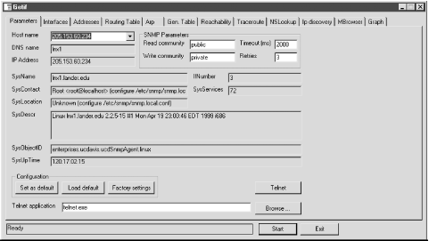
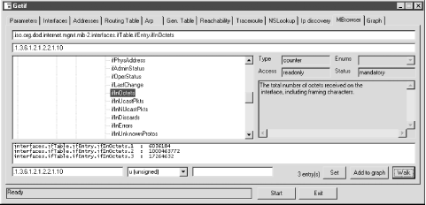

|  |
7.4. Microsoft Windows
SNMP is implemented as a Win32 service. It is available for the more recent versions of Windows but must be installed from the distribution CD-ROM. Installation and setup is very straightforward but varies from version to version.7.4.1. Windows SNMP Setup
With NT, SNMP is installed from the Network applet under the Control Panel. Select Add under the Services tab, then select SNMP Services from the Select Network Service pop-up box. You will then be prompted for your distribution CD-ROM. Once it is installed, a pop-up box called Microsoft SNMP Properties will appear. You use the three tabs on this box to configure SNMP. The Agent tab is used to set the contact and location. The Traps tab is used to set the Community name and address of the management station that will receive the traps. Use the Add button in the appropriate part of the box. The Security tab is used to set the community strings, privileges, and addresses for the management stations. Be sure to select the radio button Accept SNMP Packets for These Hosts if you want to limit access. If you experience problems running SNMP, try reinstalling the latest service pack from Microsoft. Installation with Windows 98 is similar, but at the Select Network Service prompt, you must click Have Disk. The SNMP agent can be found in the \Tools\Reskit\Netadmin\SNMP\ directory on the installation disk. SNMP is not included with the original distribution of Windows 95 but can be installed from the Resource Kit or downloaded from Microsoft. On later releases, it can be found on the distribution disk in \Admin\Ntools\SNMP. With Windows 2000, instead of using the Network applet, you will use the Add/Remove Programs applets. Select Add/Remove Windows Components. From the Windows Components Wizard, select Management and Monitoring Tools. Click on Next to install SNMP. To configure SNMP, start the Administrative Tools applet, and select Services and then SNMP Services. You'll be given more choices, but you can limit yourself to the same three tabs as with Windows NT. For further details on installation and configuration of SNMP on Windows platforms, look first to the Windows help system. You might also look at James D. Murray's Windows NT SNMP.7.4.2. SNMP Tools
NET SNMP is available both in source and binary form for Windows. With the binary version I downloaded, it was necessary to move all the subdirectories up to C:\usr to get things to work. Although the program still needs a little polish, it works well enough. As noted in Chapter 6, "Device Discovery and Mapping", tkined is also available under Windows. One very nice freeware program for Windows, written by Philippe Simonet, is getif. This provides both SNMP services as well as other basic network services. It is intuitively organized as a window with a tab for each service. To begin using getif, you must begin with the Parameters tab. You identify and set the community strings for the remote host here. Having done this, clicking on Start will retrieve the basic information contained in the system group. This is shown in Figure 7-14. Even if you know this information, it is a good idea to get it again just to make sure everything is working correctly.
Figure 7-14. getif Parameters tab
Once this has been done, many of the other services simply require selecting the appropriate tab and clicking on Start. For example, you can retrieve the device's interface, address, routing, and ARP tables this way. The Reachability tab will allow you to send an ICMP ECHO_REQUEST and will also test if several common TCP ports, such as HTTP, TELNET, SMTP, and so on, are open. The Traceroute tab does both a standard ICMP traceroute and an SNMP traceroute. An SNMP traceroute constructs the route from the route tables along the path. Of course, all the intervening routers must be SNMP accessible using the community strings set under the Parameters tab. The NSLookup tab does a name service lookup. The IP Discovery tab does simple IP scanning. The MBrowsertab provides a graphical interface to NET SNMP. This is shown in Figure 7-15. In the large pane in the upper left, the MIB tree is displayed. You can expand and collapse subtrees as needed. You can select a subtree by clicking on its root node. If you click on Walk, all readable objects in the subtree will be queried and displayed in the lower pane. You can also use this display to set objects.
Figure 7-15. getif MBrowser tab
The Graph tab will be discussed in Chapter 8, "Performance Measurement Tools".7.4.3. Other Options
Apart from SNMP, there are a number of remote administration options including several third-party commercial tools. If remote access is the only consideration, vnc is an excellent choice. In particular, the viewer requires no installation. It is under 200KB so it can be run from a floppy disk. It provides a very nice way to access an X Window session on a Unix system from a PC even if you don't want to use it for management. Installation of the server binary is very straightforward. However, vnc will not provide multiuser access to Windows and can be sluggish over low-bandwidth connections such as dial-up lines. Under these circumstances, you might consider Microsoft Terminal Server, Microsoft Corporation's thin client architecture, which supports remote access. (See Chapter 11, "Miscellaneous Tools" for more information on vnc.) For other administrative tasks, there are a number of utilities that are sold as part of Microsoft's Resource Kits. While not free, these are generally modestly priced, and many of the tools can be downloaded from the Web at no cost. Some tools, while not specifically designed for remote troubleshooting, can be used for that purpose if you are willing to allow appropriate file sharing. These include the System Policy Editor, Registry Editor, System Monitor, and Net Watcher, among others. These are all briefly described by the Windows help system and more thoroughly in Microsoft published documentation. |  | |
| 7.3. Non-SNMP Approaches |  | 8. Performance Measurement Tools |